|
|
HELP FIND THE FOLLOWING LOCATIONS
PAGE 90
STRANGE
REPORT: Report 3424
Epidemic: 'A most curious crime' (Daniel Petrie:
October/November 1968)
Unknown
1 ñ Captain Tork
(Graham Haberfield)
searches the docks for
Hamlyn Gynt.
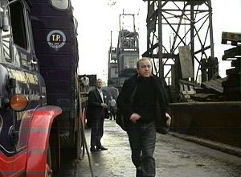
 The
next scene is filmed in Bankside,
SE1.
The
next scene is filmed in Bankside,
SE1.
Report 2493-KIDNAP: 'Whose pretty little girl are you?'
Unknown
1 ñ At the
start of "Kidnap" we see a theatre audience.
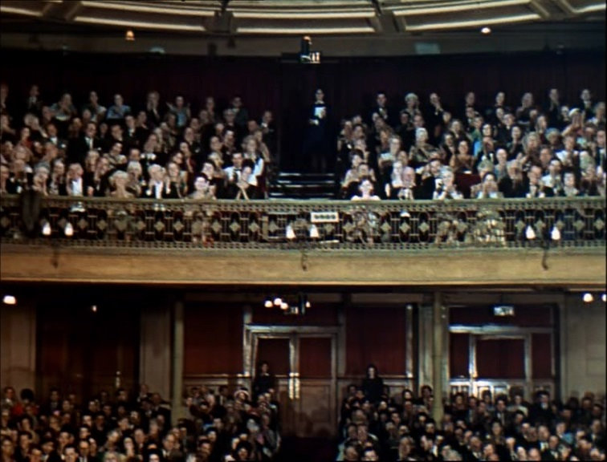
STRANGE REPORT: 7931 Sniper: 'When is your cousin not?' (Daniel Petrie: September/October 1968)
Unknown 1
ñ
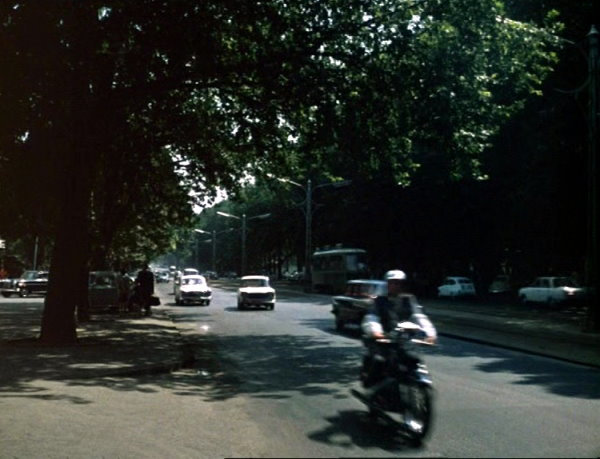
Rathausstrafl,
Berlin, Germany ñ
(Thanks to Franck Leprince, March 2021)
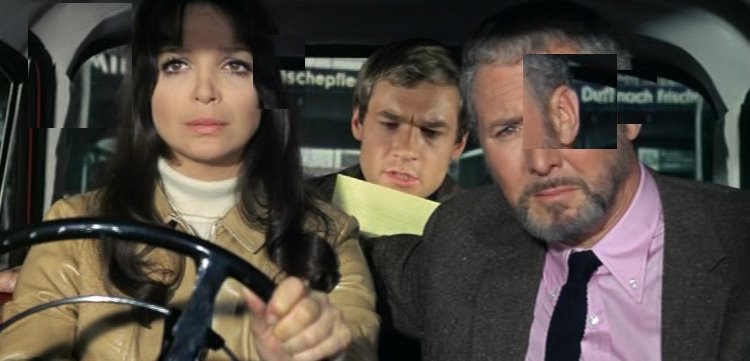
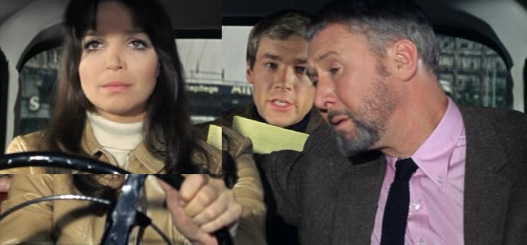
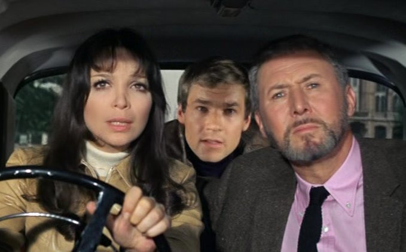
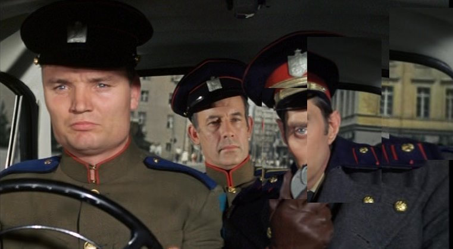
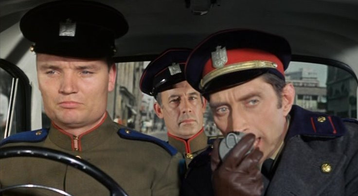
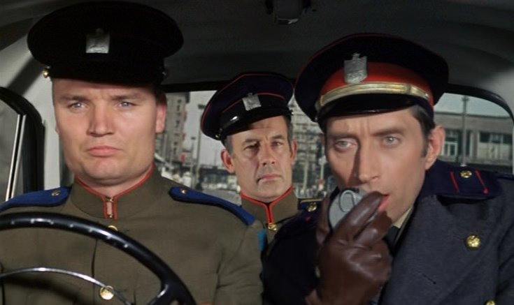
STRANGE REPORT: Report 2641-Hostage: 'If You Wonít learn Die!' (Charles Crichton, February 1969)
Unknown 1ñ Wildfields Farm where Sung Lee (Eric Young) is held by Roger Deeds (Peter Craze) and William Blake (Kenneth Haigh). Later Adam Strange (Anthony Quayle) arrives in his taxi posing as a farmer intent on buying the property.
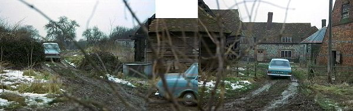
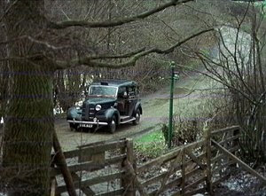 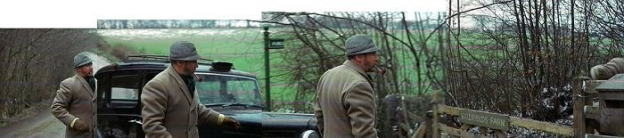
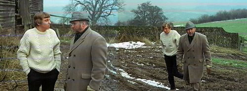
Unknown 3ñ The police line the route from Wildfields Farm to the exchange point with hidden officers.
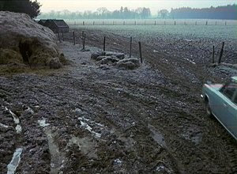 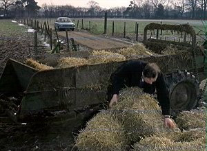
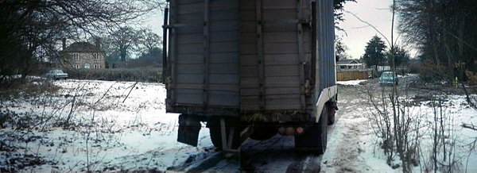
Think you know a spot? Need a bigger image? Email me.
< Previous | Index | Avengerland | Next >
Copyright © 2021 Anthony R. McKay